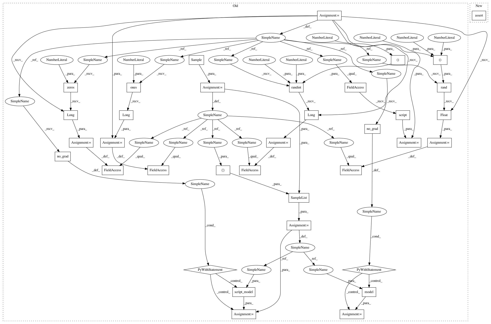

bd1822d9a84e157c468e78dafc8a8db20aa4c62f,tests/models/test_mmf_transformer.py,TestMMFTransformerTorchscript,test_finetune_roberta_base,#TestMMFTransformerTorchscript#,57
Before Change
model = self.model_class(self.config.model_config[self.model_name])
model.build()
model.eval()
test_sample = Sample()
test_sample.input_ids = torch.randint(low=0, high=50265, size=(128,)).long()
test_sample.input_mask = torch.ones(128).long()
test_sample.segment_ids = torch.zeros(128).long()
test_sample.image = torch.rand((3, 300, 300)).float()
test_sample_list = SampleList([test_sample])
with torch.no_grad():
model_output = model(test_sample_list)
script_model = torch.jit.script(model)
with torch.no_grad():
script_output = script_model(test_sample_list)
self.assertTrue(torch.equal(model_output["scores"], script_output["scores"]))
@test_utils.skip_if_no_network
def test_finetune_xlmr_base(self):
After Change
model = self.model_class(self.config.model_config[self.model_name])
model.build()
model.eval()
self.assertTrue(
test_utils.compare_torchscript_transformer_models(
model, vocab_size=ROBERTA_VOCAB_SIZE
)
)
@test_utils.skip_if_no_network
def test_finetune_xlmr_base(self):
self.config.model_config[self.model_name][
In pattern: SUPERPATTERN
Frequency: 3
Non-data size: 36
Instances
Project Name: facebookresearch/pythia
Commit Name: bd1822d9a84e157c468e78dafc8a8db20aa4c62f
Time: 2020-10-15
Author: vedanuj@fb.com
File Name: tests/models/test_mmf_transformer.py
Class Name: TestMMFTransformerTorchscript
Method Name: test_finetune_roberta_base
Project Name: facebookresearch/pythia
Commit Name: bd1822d9a84e157c468e78dafc8a8db20aa4c62f
Time: 2020-10-15
Author: vedanuj@fb.com
File Name: tests/models/test_mmbt.py
Class Name: TestMMBTTorchscript
Method Name: test_finetune_model
Project Name: facebookresearch/pythia
Commit Name: bd1822d9a84e157c468e78dafc8a8db20aa4c62f
Time: 2020-10-15
Author: vedanuj@fb.com
File Name: tests/models/test_mmf_transformer.py
Class Name: TestMMFTransformerTorchscript
Method Name: test_finetune_xlmr_base
Project Name: facebookresearch/pythia
Commit Name: bd1822d9a84e157c468e78dafc8a8db20aa4c62f
Time: 2020-10-15
Author: vedanuj@fb.com
File Name: tests/models/test_mmf_transformer.py
Class Name: TestMMFTransformerTorchscript
Method Name: test_finetune_roberta_base